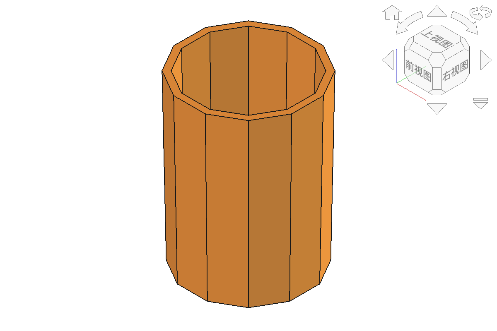
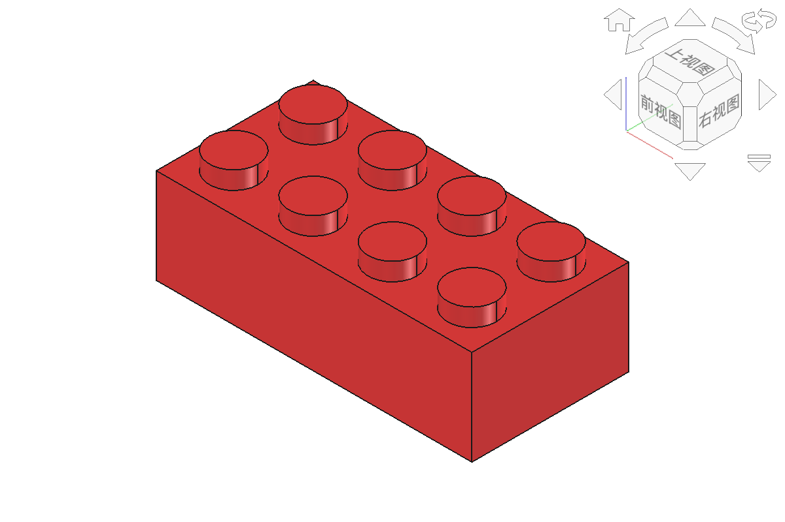

4课时 · 第6-9课 · 技术实践
变量 = 存数据的容器，给数据起个名字
name = 'FreeCAD' version = 26 height = 80.0 print(name, version)
25, 60, 3
没有小数点
age = 16
3.14, 9.6, 2.5
有小数点
pi = 3.14
'FreeCAD', '钥匙扣'
必须用引号
name = '张三'
# 用type()查看数据类型
print(type(25)) # <class 'int'> 整数
print(type(3.14)) # <class 'float'> 浮点数
print(type('hello')) # <class 'str'> 字符串
# 这是注释，Python不执行
length = 60 # 行末注释
width = 18
print('长度:', length)
print('宽度:', width)
print('面积:', length * width)
import Part → 导入Part模块 → 用代码创建几何体
import Part
box = Part.makeBox(60, 18, 3)
Part.show(box)
print('体积 =', box.Volume)
import Part
cyl = Part.makeCylinder(
15, # 半径
40, # 高度
FreeCAD.Vector(0, 0, 0) # 圆心
)
Part.show(cyl)
print('体积 =', round(cyl.Volume, 1))
重复执行代码，不用复制粘贴
import Part
for i in range(5):
x = i * 10
cyl = Part.makeCylinder(
3, 5, FreeCAD.Vector(x, 0, 0))
Part.show(cyl)
print('创建了5个圆柱')
import Part
box = Part.makeBox(31.8, 15.8, 9.6)
shape = box
for c in range(4): # 4列
for r in range(2): # 2行
x = 3.9 + c * 8
y = 3.9 + r * 8
stud = Part.makeCylinder(
2.45, 1.8,
FreeCAD.Vector(x, y, 9.6))
shape = shape.fuse(stud)
Part.show(shape)
import Part
def make_brick(L, W, H, x=0, y=0):
"""创建积木块"""
box = Part.makeBox(L, W, H,
FreeCAD.Vector(x, y, 0))
return box
brick1 = make_brick(32, 16, 9.6)
brick2 = make_brick(16, 16, 9.6, x=40)
Part.show(brick1)
Part.show(brick2)


实践作业2：十二边参数化笔筒 · 实践作业3：循环生成凸点、空腔和加强管
STEAM融合点：T技术 + M数学（变量、尺寸、循环与阵列关系）
checked = brick.removeSplitter()
valid = checked.isValid()
solids = len(checked.Solids)
size = checked.BoundBox
print('有效:', valid)
print('实体数:', solids)
print(round(size.XLength, 1),
round(size.YLength, 1),
round(size.ZLength, 1))
👉 下一步：参数化设计与布尔运算（模块四）